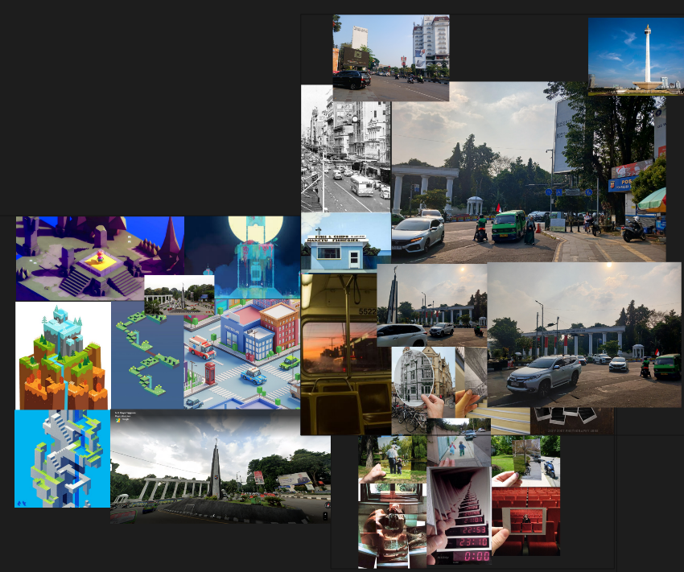

An Individual project that forsees Self-discovery, Speculative Design, and Personal Identity .
Tools: Adobe AE, Pr, Lr Classic, Figma, 3D Blender, Spline.
Target Audience: International students in Auckland CBD, NZ.
Down below is the process of how 'Reminisce.' being made.
Early Stage, Visual & Moodboard Inspo
Storyboard was essential meant to be a part of something bigger, I was meant to be creating an AR glasses experience which heavily inspired by Apple Vision Pro..


the creation of main character. Mocha is my favorite coffee.
development of the final mini scene for all the experiments to be put together.
My work consists of four distinct experiments, each designed to showcase progression as an element of beauty. These experiments allow individuals to perceive and reflect on this progression as something meaningful and worth reminiscing about.
This project is considered high-risk due to the lack of user testing and user journey mapping. It also carries a philosophical aspect, as it explores the concept of reminiscing from a unique perspective."
People often associate 'reminisce' with melancholy, sadness, or the past. However, in my view, reminiscing can happen anywhere, at any time, or at any hour. While working on this project, I encountered a challenge in week 10 when creating a video UI specifically for my glasses.
“I have not failed. I’ve just found 10,000 ways that won’t work.” — Thomas Edison